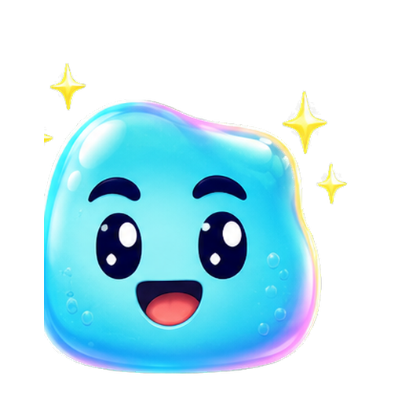
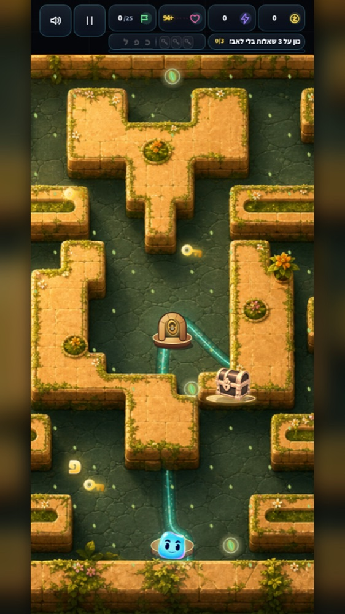
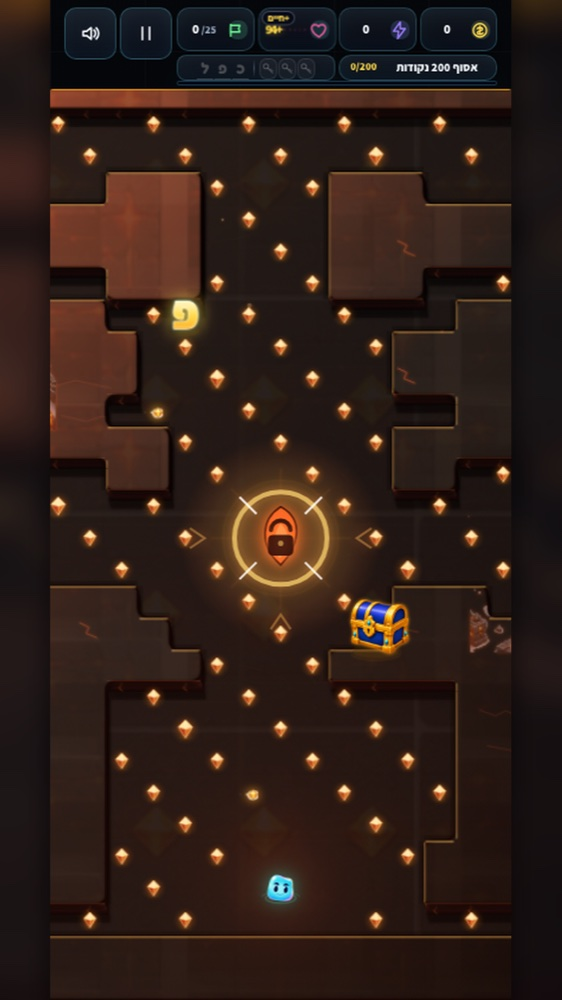
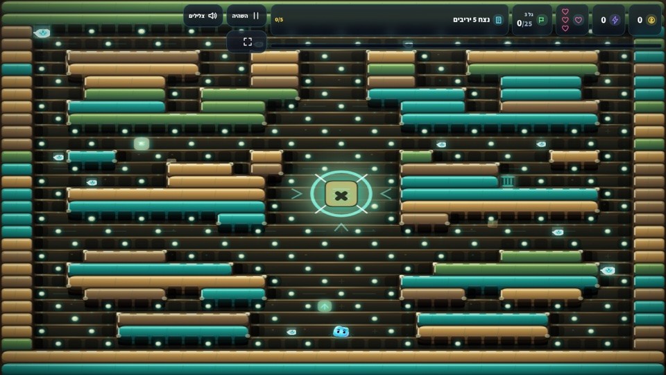
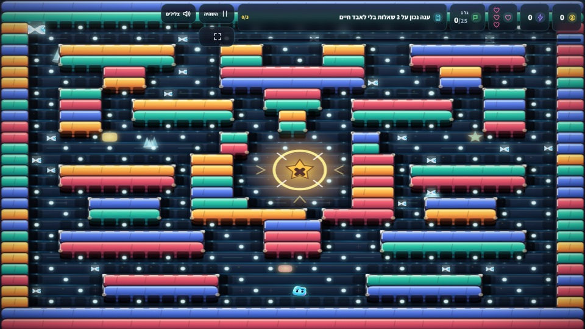
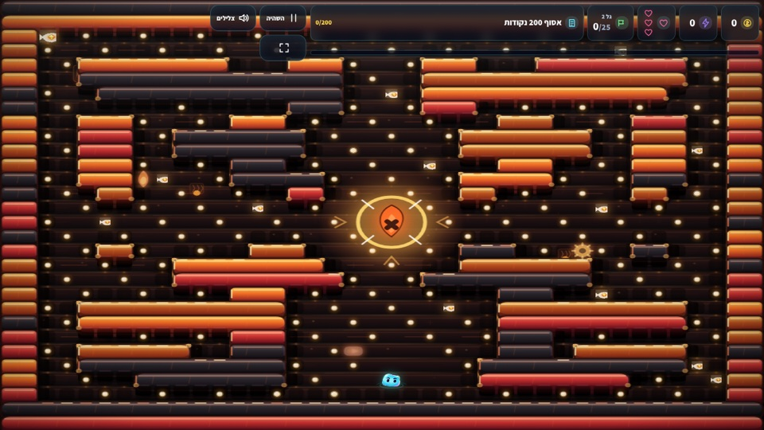
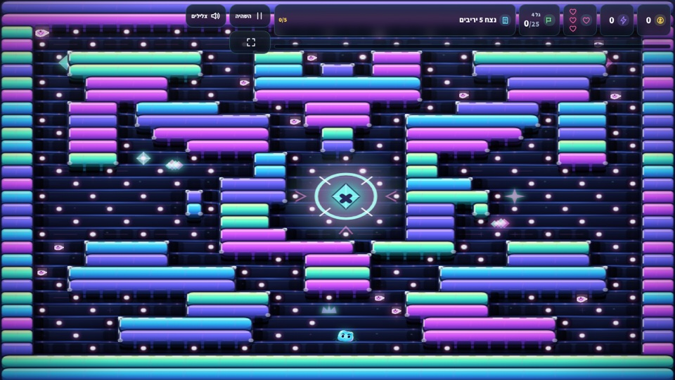

רמות קושי
מתחילים בקצב נוח ומתקדמים למהיר ומתגמל יותר.



משחק הכפל שהופך תרגול להרפתקה
מבוך. שאלה. ניצחון.
בוחרים דמות, מתחמקים מאויבים ופותרים תרגילי כפל כדי להתקדם, לצבור ניקוד ולטפס עד למקום הראשון.
ככה זה באמת עובד
לא שיעור שמתחפש למשחק — המשחק עצמו דורש מהילדים לשלוף את התשובה ולהמשיך בתנועה.
ארקייד למרדף אחרי שיא, או הרפתקה בין ארבעה עולמות.
המבוך נעצר, תרגיל נפתח, ותשובה נכונה מחזירה אתכם למרדף.
תשובות, פריטים, משימות ובוסים מוסיפים נקודות; קומבו ורמה קשה מכפילים אותן.
המשחק מבפנים
אלה מסכים אמיתיים מתוך כפלול: המבוך ממשיך לזוז, התרגיל מגיע ברגע הנכון, והעולמות משתנים ככל שמתקדמים.






הדירוג העולמי של כפלול
כל שחקן מופיע פעם אחת עם השיא הגבוה ביותר שלו. בוחרים מצב ורמה, משפרים קומבו וחוזרים לנסות לעקוף את עצמכם — ואת כולם.

להורים שרוצים פחות מאבק
במקום לבקש “עוד דף”, מציבים יעד משחקי ברור. החזרה על התרגילים מתרחשת בתוך סיבובים קצרים, עם משוב מיידי וקושי שאפשר לבחור.
מתחילים בקצב נוח ומתקדמים למהיר ומתגמל יותר.
בכל עולם יש 24 תרגילים ועוד 3 שאלות בוס.
אין פרסומות, אין רכישות בתוך המשחק ואין צורך בחשבון.
המשחק עצמו ממשיך לעבוד. השיא נשמר במכשיר ומסתנכרן עם אלוף האלופים כשהחיבור חוזר.
אפשר לתרגל כפל בלבד, או להוסיף חילוק מדויק מתוך הגדרות המשחק.
הסיבוב הראשון מתחיל כאן
משחקים מיד בדפדפן, או מורידים את קובץ ה-Android למכשיר.

לפני שמתחילים
לילדים שמתחילים להכיר את לוח הכפל ולמי שרוצה לשפר מהירות וביטחון בשליפה. אפשר לבחור רמת קושי בכל משחק.
לא. אפשר להתחיל לשחק בלי חשבון. הכינוי לטבלת אלוף האלופים נשמר במכשיר ומיועד להצגת השיא בלבד.
מפגש עם אויב פותח תרגיל ועוצר את המבוך, כך שהילד מקבל רגע מרוכז לענות. תשובות נכונות ממשיכות את המשחק ומוסיפות ניקוד.
כן. כפלול פועל בדפדפן בטלפון ובמחשב, וכולל גם קובץ התקנה ל-Android.
לא. המשחק חינמי, ללא פרסומות וללא רכישות בתוך המשחק.
נגישות היא חלק מהמשחק
יישמנו מבנה סמנטי, ניווט מלא במקלדת, סימון מיקוד ברור, טקסט חלופי לתמונות משמעותיות, תמיכה בקוראי מסך, ניגודיות גבוהה והתאמה להפחתת תנועה ולהגדלת טקסט.
נתקלתם בקושי? כתבו לנו מה ניסיתם לעשות, באיזה מכשיר ובאיזו טכנולוגיה מסייעת השתמשתם.
דיווח על בעיית נגישות